Hi, I'm Ian.
A Marketing Analytics student at SMU who plans campaigns, measures what works, and builds events people actually show up for.
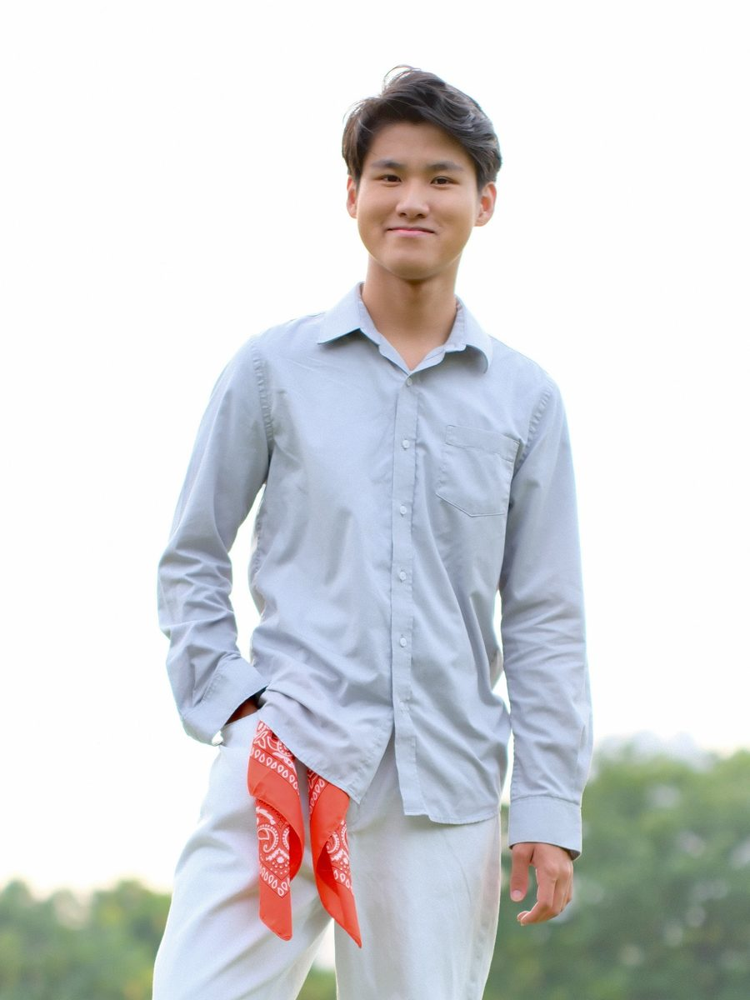
Bachelor of Business, Marketing Analytics
GPA: 3.94 / 4.00, Summa Cum Laude
Singapore Management University, 2024 to 2028
Work experience
Four marketing roles across retail, edtech and education, from social content to campaign evaluation.
-
Harvey Norman SingaporeMay 2026 to now
Marketing Assistant (part-time)
Aug 2026 to now
Continued on after my Marketing Internship, May to Aug 2026
- Create the theme and look for major marketing events
- Manage social media campaigns and digital advertising
- Evaluate campaigns and events after they run to measure effectiveness
- Work with vendors and other departments, and make sure initiatives are carried out at store level
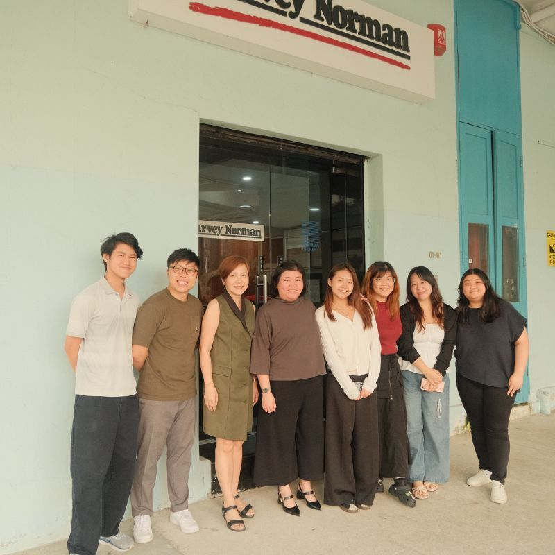
With the marketing team 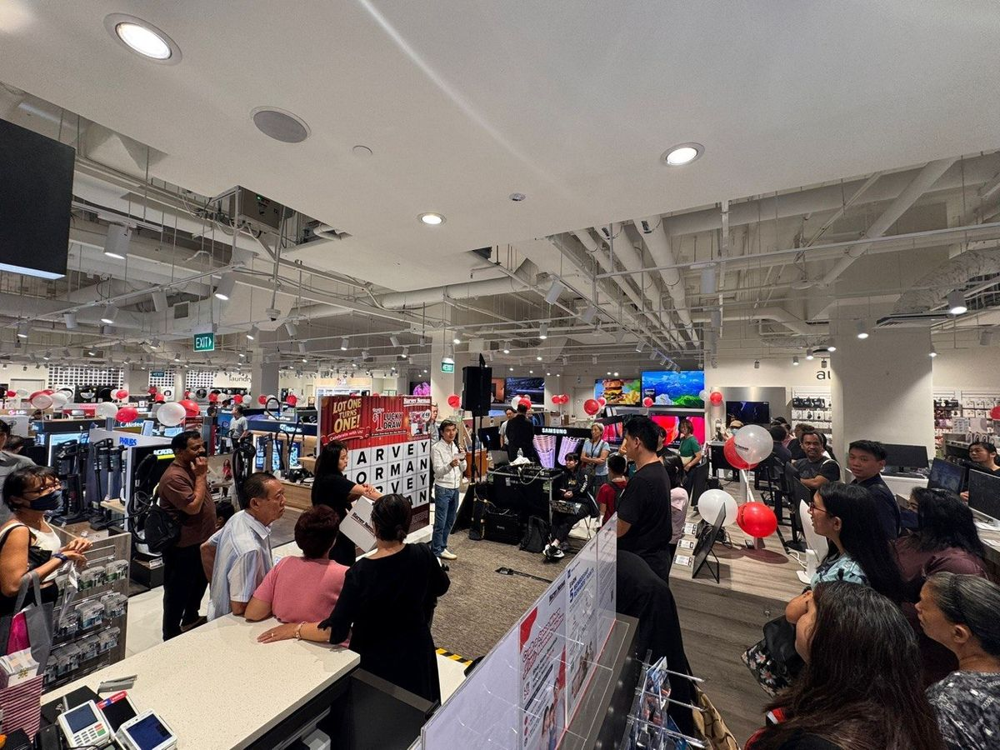
In-store anniversary event 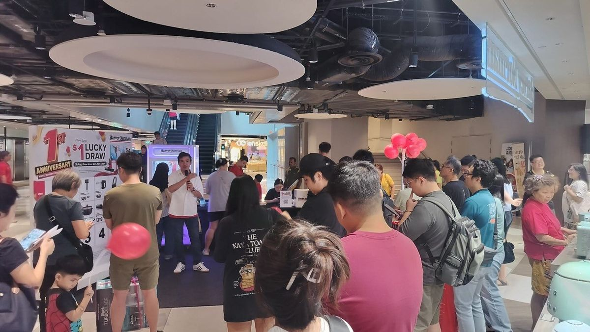
$1 lucky draw activation -
NextplayJul to Dec 2025
Marketing Intern
Singapore
- Set up and managed digital content funnels and customer journeys
- Tracked and reported content performance, then optimised user flow and campaigns
- Helped define business and campaign strategies to grow Nextplay
- Supported marketing for online and in-person workshops and events
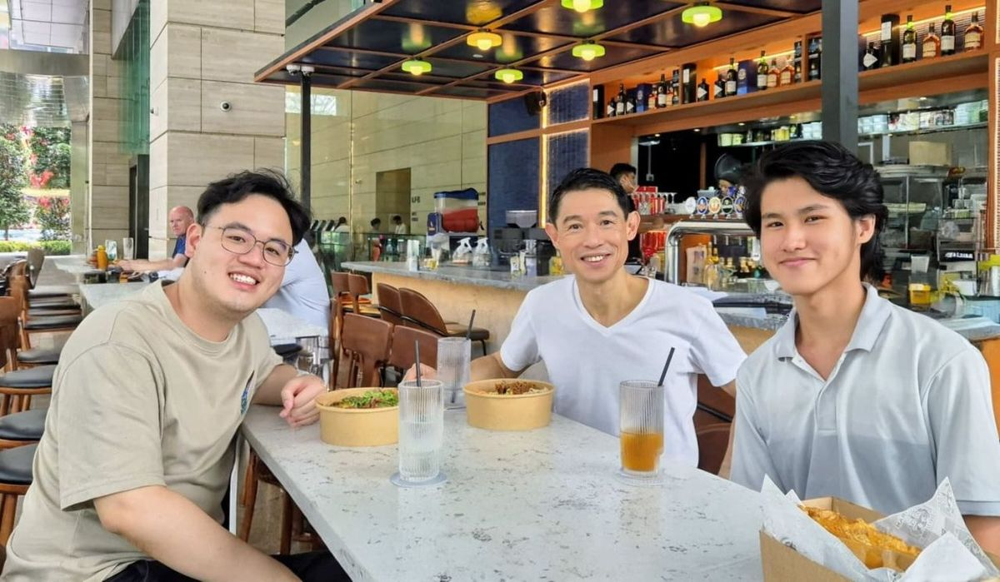
Lunch with the Nextplay team -
Universitas Multimedia NusantaraApr to May 2024
Social Media Marketing Intern
Jakarta, Indonesia
- Developed the social media content strategy for the university's open house
- Led videography and editing for promotional content
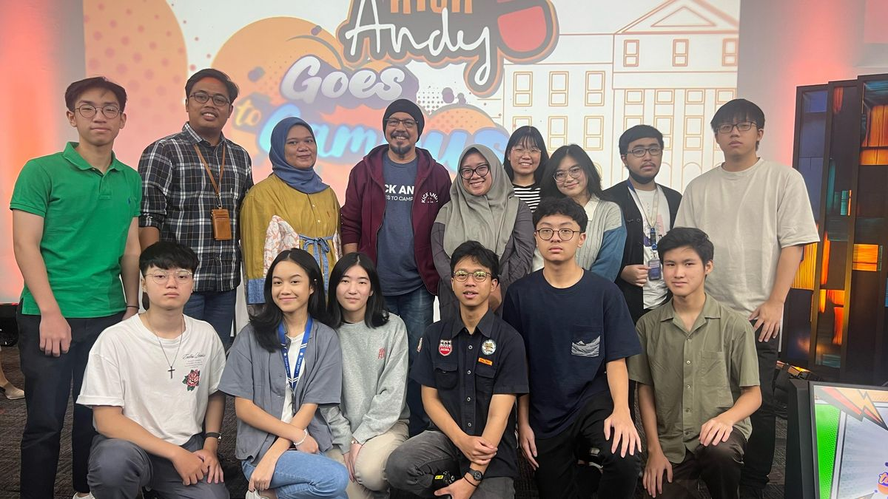
With the UMN team at Kick Andy Goes to Campus -
OxihomJul to Aug 2023
Social Media Marketing Intern
Jakarta, Indonesia
- Shot, produced and edited short-form product videos for TikTok
Honours and certifications
Academic recognition from SMU, plus courses in digital marketing and brand management.
Dean's List, 2024–2025
Lee Kong Chian School of Business, Singapore Management University
Awarded for meritorious performance. My current GPA of 3.94 out of 4.00 places me at Summa Cum Laude (Highest Distinction) standing.
Also a Statistics Peer Tutor at SMU, Jan to Jul 2025.
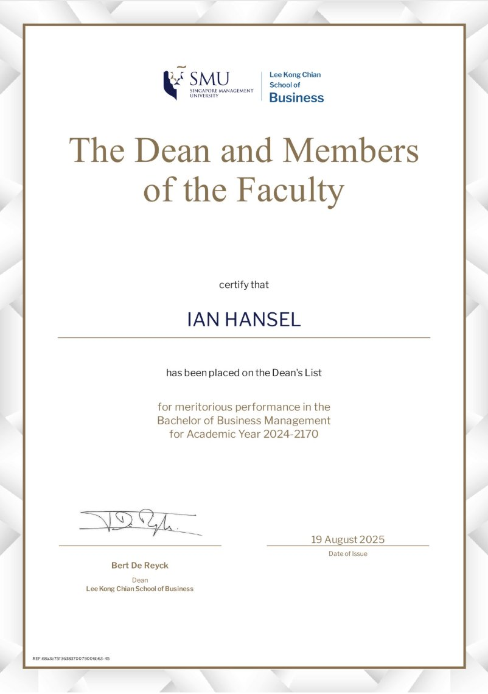
View certificateDigital Marketing and E-commerce
- Foundations of Digital Marketing and E-commerce
- Attract and Engage Customers with Digital Marketing
- From Likes to Leads: Interact with Customers Online
- Think Outside the Inbox: Email Marketing
Brand Management
University of London
- Aligning Business, Brand and Behaviour
Leadership and projects
Most of my leadership has happened at SMU Xploration Crew (SMUX), the university's outdoor adventure community.
-
SMU Xploration CrewJan to Dec 2026
Corporate Communications Director
- Lead the corporate communications team plus the marketing and sponsorship coordinators of every SMUX club
- Source and vet sponsorships for all SMUX clubs to keep partners aligned with our brand
- Build relationships with other SMU student bodies, vendors and external partners
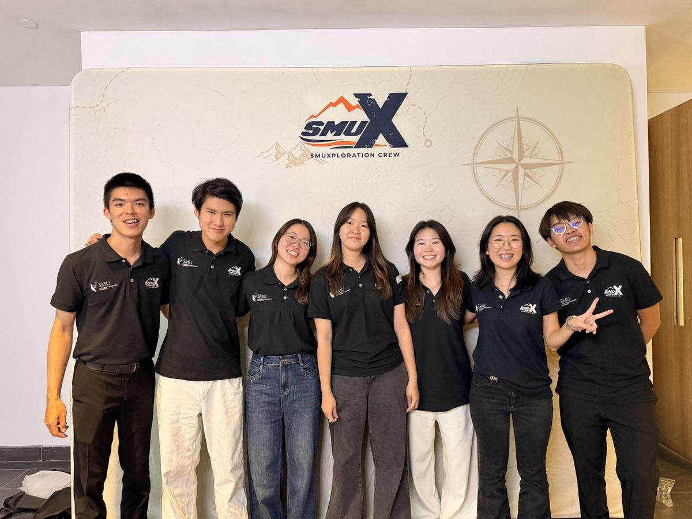
With the SMUX executive committee -
SMUX Skating ClubJan to Dec 2025
Marketing Coordinator
- Planned and ran marketing for SMU Skatathon, Skate Experience and Halloween Skate, which drew over 500 unique participants in total
- For Skatathon 2025, an international skating marathon, directed the promo videos, ran email campaigns across the skating community, and designed the medals, banners, archways and t-shirts
- Wrote the copy, designed posters and shot event photography
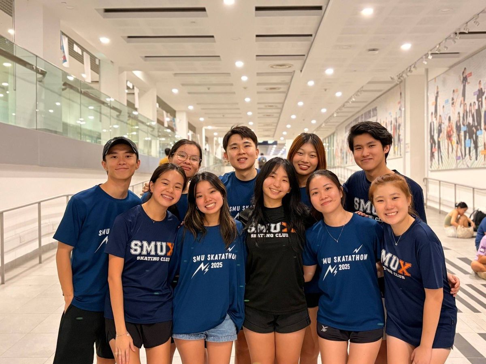
The Skatathon 2025 crew, in the shirts we designed -
Euphorux Orientation CampMar to Sep 2025
Finance Director
- Owned the camp budget, allocated funds and tracked every expense and claim
- Reached out to and secured sponsors for the camp
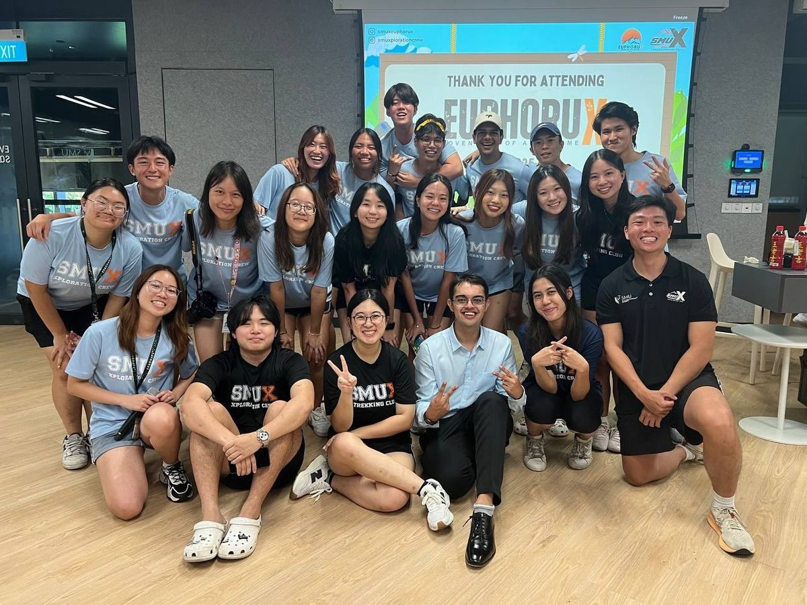
The Euphorux 2025 committee -
SMUSAfiestaSep to Nov 2024
Marketing Associate
- Designed email and Instagram content, met sponsor marketing requirements and prepared post-event collaterals
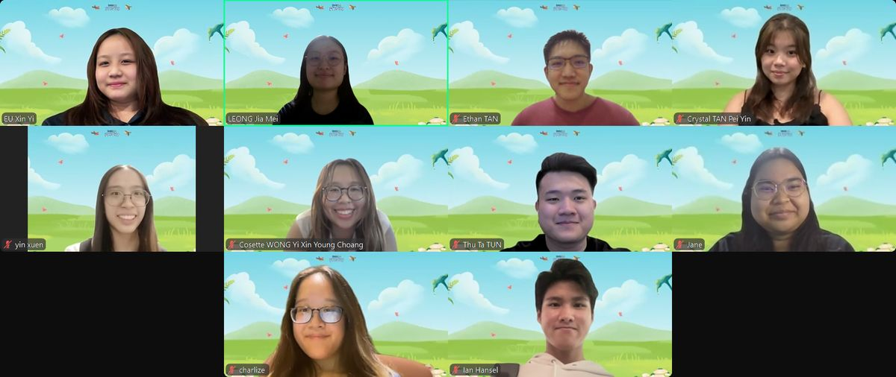
The SMUSAfiesta marketing team
Skills and tools
Where marketing strategy, data and creative production meet.
Marketing
Analytics
Creative
500+ hours: Adobe Premiere Pro, Canva, CapCut
100+ hours: Adobe Lightroom, Adobe Photoshop, Procreate
Productivity: Microsoft 365, SAP Emarsys, SAP Logon, Kajabi, Notion, Asana, Lastyard
Off the clock
When I'm not working on a campaign, I'm usually on skates or behind a camera.
Skating
Skating and balance sports got me into SMUX, and it's where I've done some of my favourite marketing work.
Photography
I shoot events and everyday moments, then edit them in Lightroom.
Videography
Cinematic short films and promo videos, edited in Premiere Pro. See my visual portfolio.
At SMUX we live by three values: fun, family and adventure. I try to bring all three to every team I join.